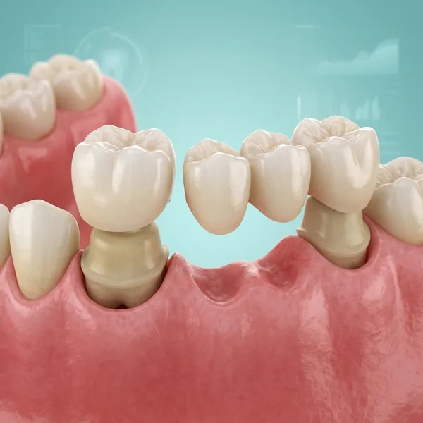

Dental Crowns & Bridges in Gudivada
Restore damaged or missing teeth with custom-made crowns and bridges. Achieve a natural-looking smile that feels as good as it looks.

What are crowns and bridges?
A crown is a custom-made cap that covers a damaged or decayed tooth, restoring its shape, size, strength, and appearance. A bridge replaces one or more missing teeth by anchoring to adjacent natural teeth or dental implants.
Both solutions are permanent or semi-permanent, natural-looking, and restore full functionality to your teeth and smile. At Krishna Dental, we use advanced technology and premium materials to craft restorations that blend seamlessly with your natural teeth.
Every crown or bridge is planned and fitted personally by Dr. Vidya Sahithi Atluri, MDS (Prosthodontist), starting with an assessment and precise impressions before your restoration is crafted from zirconia, porcelain, PFM, or metal — prices start from Rs 2,500 INR, with zirconia from Rs 5,000 INR. In many cases we can complete the crown in a single visit using same-day technology, and with proper care a well-made crown or bridge typically lasts 10 to 15 years.
What types of crowns do we offer?
Zirconia crowns
Strongest and most durable option. Zirconia offers excellent biocompatibility, natural appearance, and resistance to staining. Perfect for visible teeth and high-stress areas.
Porcelain crowns
Unmatched aesthetics and translucency that mimics natural teeth. Ideal for front teeth where appearance is paramount. Requires gentle care to avoid chipping.
PFM (Porcelain-fused-to-metal)
Combines strength of metal with the beauty of porcelain. Offers excellent durability and aesthetics. A popular choice for back teeth where strength matters.
Metal crowns
Gold or alloy crowns. The strongest and longest-lasting option with minimal wear. Most durable choice but less aesthetic — ideal for back molars.
How do we create your crown or bridge?
Assessment & preparation
We examine the tooth and take X-rays to assess decay or damage. The tooth is gently prepared by removing decayed portions and shaping it to accommodate the crown.
Impressions
Precise digital or traditional impressions are taken to ensure your crown fits perfectly. We also match the shade to blend with your natural teeth.
Temporary crown
A temporary crown protects your prepared tooth while we craft your permanent restoration. This keeps your tooth functional and maintains appearance.
Lab fabrication
Our experienced lab technicians craft your custom crown using premium materials. Every detail is perfected to match your natural tooth shape and shade.
Final fitting
Your permanent crown is carefully fitted and adjusted for comfort and bite alignment. Once perfect, it's permanently cemented to provide lasting protection.
Why can you trust our crown and bridge care?
Premium materials
We source the finest zirconia, porcelain, and metals from trusted labs. Your crown is built to last with materials that resist staining and wear.
Precise fit
Using digital imaging and detailed impressions, we ensure your crown fits perfectly. Proper fit means comfort, longevity, and protection for your natural tooth.
Natural aesthetics
Our crowns blend seamlessly with your natural teeth in shape, colour, and texture. No one will know you have a crown — it simply looks like your real tooth.
Same-week turnaround
In many cases, we can complete your crown in one visit with advanced same-day technology. No need to wait weeks or walk around with a temporary crown.
Living with your new crown or bridge
If you're wearing a temporary crown between visits, avoid sticky or very hard foods on that side, since temporaries aren't as strongly bonded as the final restoration. Once your permanent crown or bridge is cemented, it may feel slightly different for a few days as your bite adjusts — this is normal and settles quickly.
Brush and floss around the restoration exactly as you would a natural tooth; a well-made crown doesn't need any special care beyond good everyday hygiene. Come back if the bite feels noticeably high or uneven after a couple of days — a small adjustment is quick and painless.
With a bridge, a floss threader or interdental brush helps you clean underneath the connecting piece where a regular floss strand can't reach — we'll show you the technique before you leave.
Zirconia, ceramic, or PFM — which crown material?
Zirconia crowns are extremely strong and hold up well on back teeth that take heavy chewing force, with a look that's close to a natural tooth. All-ceramic crowns give the most translucent, lifelike appearance and are often preferred for front teeth where aesthetics matter most.
PFM (porcelain-fused-to-metal) crowns combine a metal core with a porcelain surface for a strong, budget-friendly option. We'll recommend the material based on which tooth is being restored, how much bite force it takes, and your aesthetic priorities.
With proper care, a well-fitted crown or bridge typically lasts 10 to 15 years before it needs replacing, though this varies with bite force, grinding habits, and how well the surrounding gum is maintained.
One question patients often have is whether a crown is really necessary, or if a large filling would do instead — and the honest answer depends on how much healthy tooth structure remains. Once a tooth has lost a significant portion of its original structure to decay, a previous filling, or a fracture, a filling alone often can't withstand normal chewing force and is likely to crack or fail again. A crown wraps and reinforces the entire visible tooth, distributing bite force much more evenly. We'll always explain our reasoning with your X-ray in front of you, so the choice between a filling and a crown makes sense to you, not just to us.